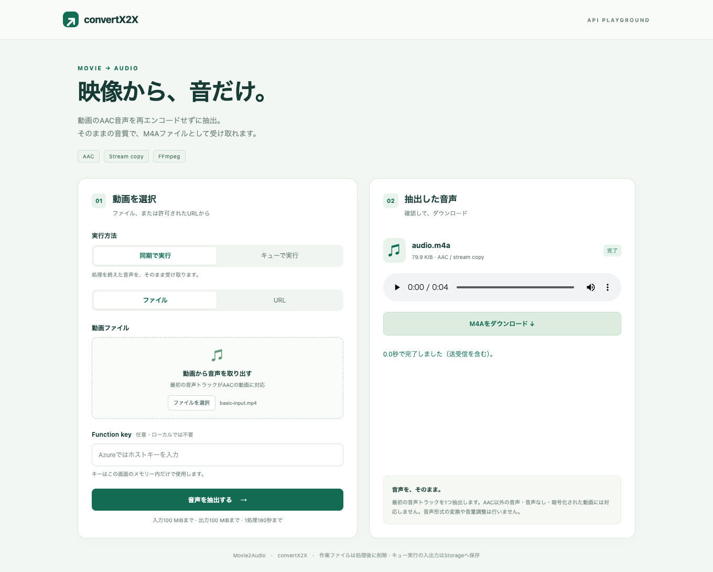
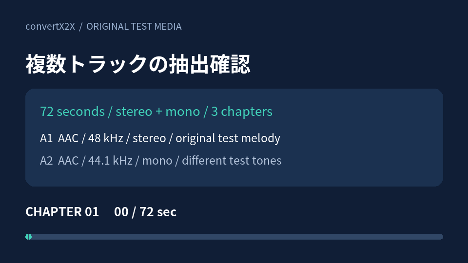
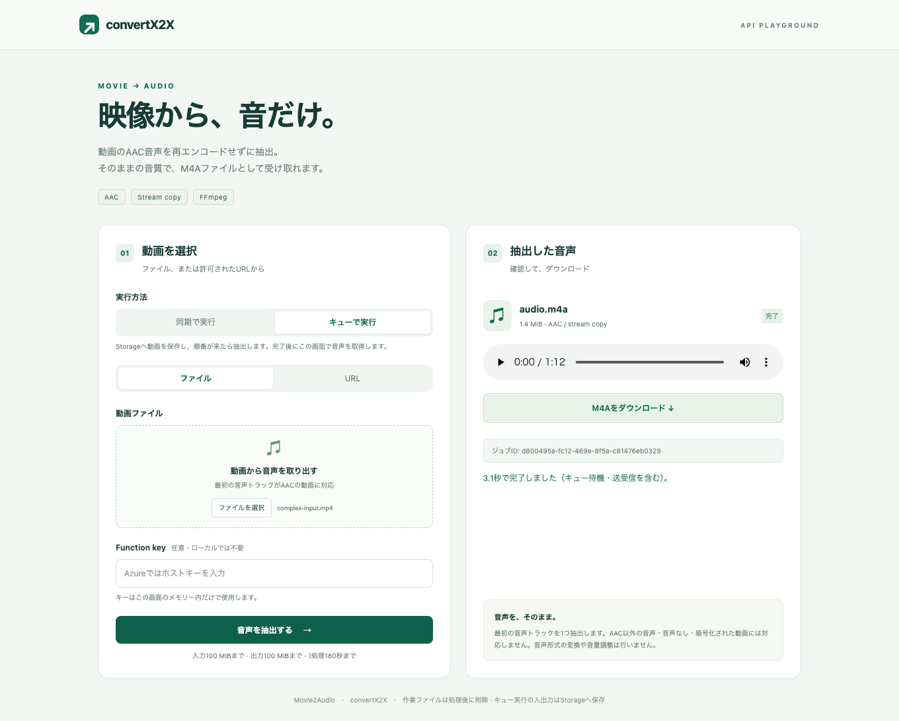
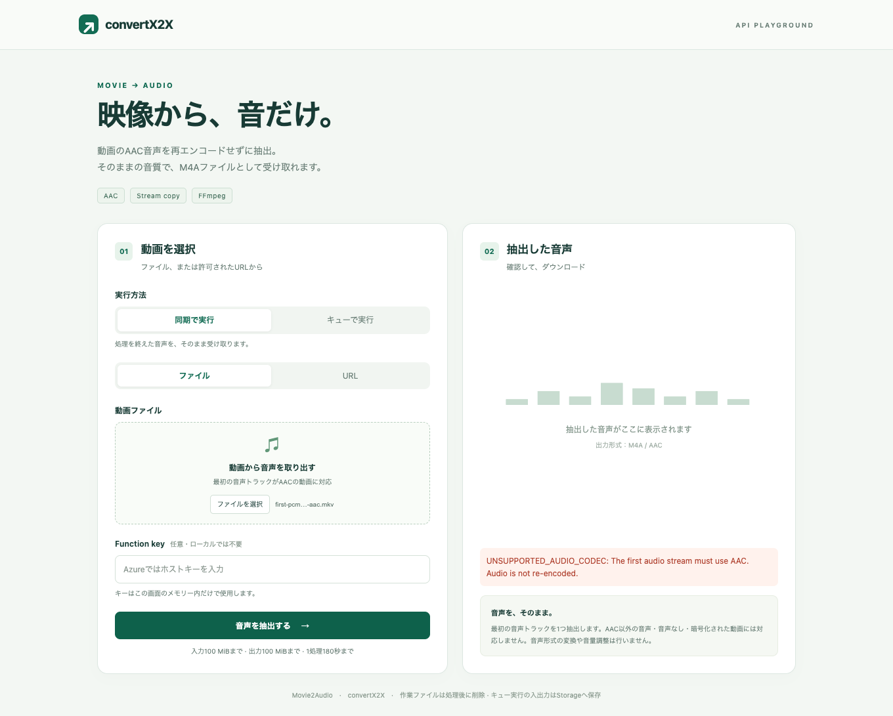

Movie → Audio / Conversion examples
実際の変換例
入力動画、実際にAPIから返ったM4A、Playgroundの実行画面をまとめました。単純な動画に加えて、複数音声・字幕・チャプターを含む動画でも、どの情報が残るかを確認できます。
2026年9月16日に、Node.js 24・Functions Core Tools・同梱FFmpeg 9.0.1で実行しました。キューはAzuriteを使用しています。Azure上の速度・負荷試験ではありません。映像とテスト音は自作で、会話の録音や文字起こしは含みません。
基本例：4秒の動画からAACを抽出
映像1本と、48kHz・ステレオのAAC音声1本を含むMP4を、同期HTTP APIに送信しました。出力は4秒のM4Aです。
実際に抽出した音声（自作の短いテストメロディー）
{kind=link}

AACの189パケットすべてについて、入力の最初の音声と出力のデータが一致しました。M4Aのコンテナーは作り直すため、動画ファイル全体とM4A全体のハッシュは異なります。
複雑な例：音声2本・字幕・3チャプターの72秒動画
3つの映像セクション、日本語タイトル、言語タグ、異なる音声2本、字幕、チャプターを含む自作MP4です。同期APIと、Playgroundの「キューで実行」の両方に同じ入力を送りました。
| 入力の構成 | 実際の結果 |
|---|---|
| 映像：960 × 540、MPEG-4 Part 2 | 出力に含めない |
| 第1音声：AAC、48kHz、ステレオ、日本語タグ | この音声のみを再エンコードせず保持 |
| 第2音声：AAC、44.1kHz、モノラル、英語タグ | 出力に含めない。音声を混ぜない |
| 字幕：mov_text、英語3区間 | 出力に含めない |
| 3チャプター・日本語タイトル・作成者タグ | 元の情報を出力へ引き継がない |
実際に抽出した第1音声（72秒の自作ステレオテスト音）
入力映像の内容を確認する
{kind=link}

{kind=link}

音声3,376パケット、1,443,311 bytesがすべて一致。入力の第1AACと出力AACをパケット順に照合し、データの一致を確認しました。サンプリングレートやチャンネル数もそのままです。音質改善、音量調整、モノラル化は行いません。
同じ複雑な動画をQueueへ直接依頼
動画をAzuriteの入力Blobへ格納し、直接Queue APIのJSONをBase64で1回だけエンコードして送信しました。HTTPのジョブ作成APIを経由せず、Queueトリガーで実際に抽出した結果です。
結果は指定した出力コンテナーの exports/{jobId}/results/{attemptId}/audio.m4a に保存されました。保存されたBlob、結果取得APIからダウンロードしたM4A、同期APIのM4Aは、ファイル全体が一致しています。Queueの動画データや変換結果をZIPへ詰める処理はありません。
URL入力とSAS保存は、このページでは実行していません。ここに載せたキュー保存は、登録済みStorage接続を使う方式です。URL入力・SAS保存の制約は各API資料を参照してください。
対応外の例：2本目がAACでも第1音声を優先
第1音声がPCM、第2音声がAACの動画を送ると、422 UNSUPPORTED_AUDIO_CODECになりました。後ろにあるAACへ切り替えたり、PCMをAACへ再エンコードしたりはしません。
{kind=link}

422 NO_AUDIO_STREAM を確認しました。実行記録と再現方法
HTTP実行記録に入力・出力のサイズ、SHA-256、HTTP応答、所要時間、AACパケット照合結果を掲載しています。ブラウザー実行記録には、実際の再生・ダウンロード・非同期ジョブの確認結果があります。時間は手元の1回の測定値で、Azure環境での処理時間の目安や上限ではありません。画面の測定値は別の実行です。
curl --fail-with-body \
-H 'Content-Type: application/octet-stream' \
--data-binary @complex-input.mp4 \
'http://localhost:7073/api/convert' \
--output audio.m4a入力をダウンロードして実行できます。AzureのURLでは x-functions-key が必要です。ローカル環境の起動は利用ガイド、非同期機能は非同期HTTPを参照してください。
自作サンプルと検証スクリプト
- 入力動画の生成：Pillowとエンコード可能なFFmpegが必要です。音声は合成したテスト音です。同梱の本番用FFmpegは抽出専用のため、この入力生成には使えません。
- 実際のHTTP呼び出しとAAC照合：macOS Apple Silicon / Linux x64の同梱FFprobeを使用します。
- 実際のPlayground撮影：PlaywrightとChromeを使用します。
- 実際の直接Queue呼び出し：FunctionsとAzuriteが必要です。Azuriteは
--skipApiVersionCheckを指定し、Functionsにはローカルエミュレーター接続を設定します。自分で作成した検証用Blobのみ実行後に削除します。
サンプル、図版、コードはこのリポジトリと同じMITライセンスです。フォントなど依存物には元のライセンスが適用されます。